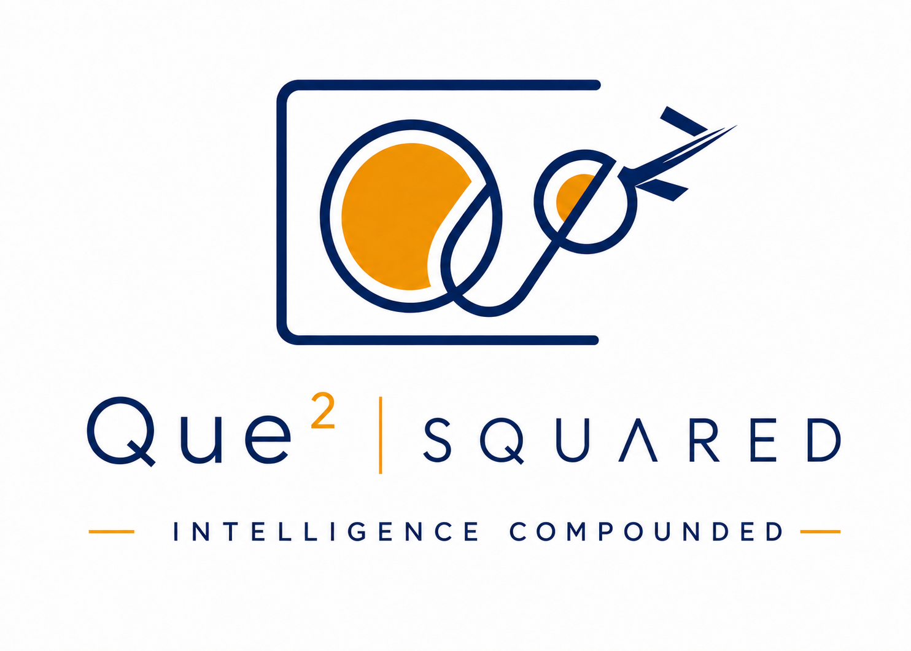
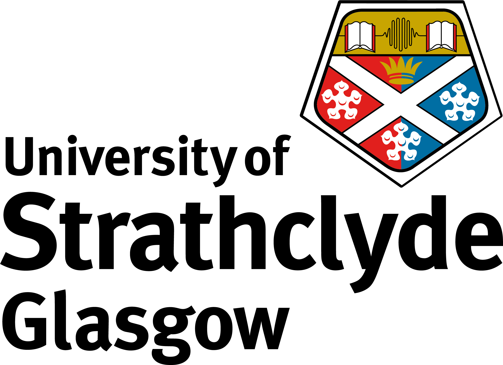

Evidentia Search Strategy Convertor
Ovid MEDLINE → PubMed
Software 0.1.0 · Conversion ruleset v20
Transparent strategy conversion
Convert Ovid MEDLINE search strategies into transparent, auditable PubMed queries. Evidentia applies a deterministic conversion ruleset to pasted strategies and RTF strategy input.
The interactive converter is currently a separately hosted Streamlit application.